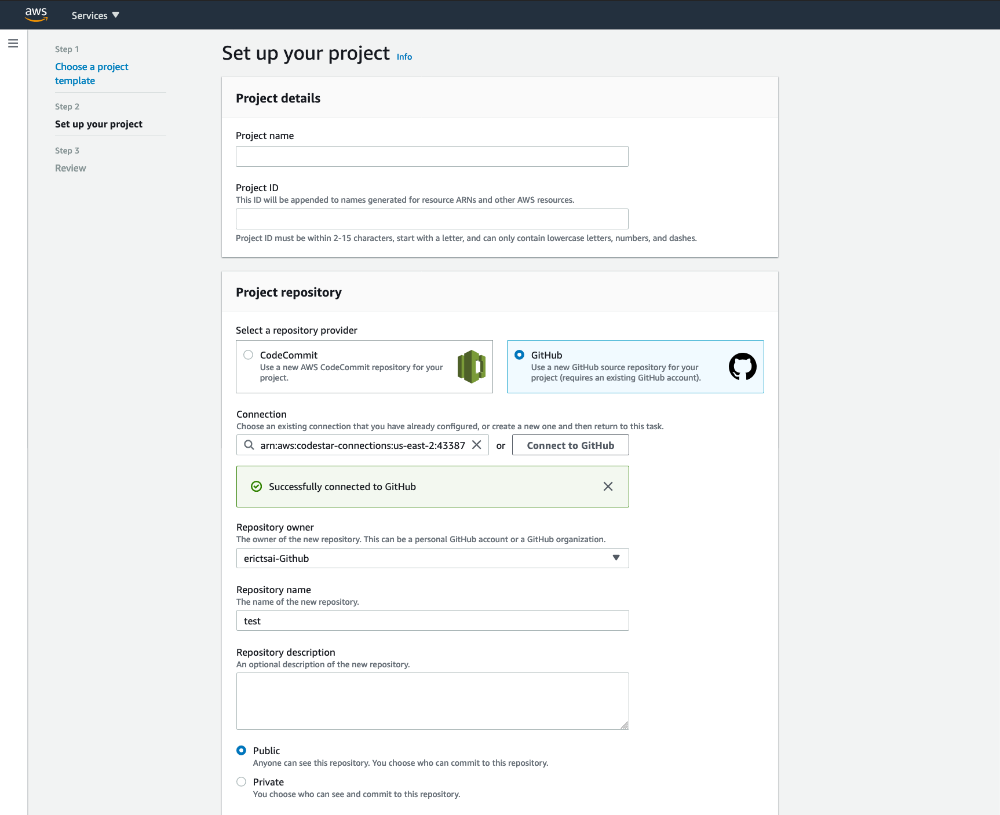
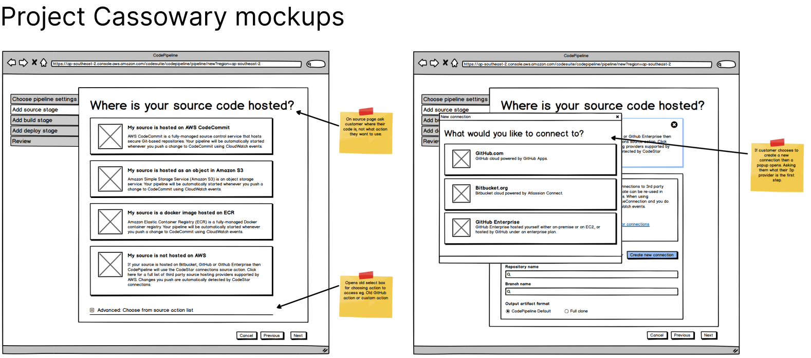
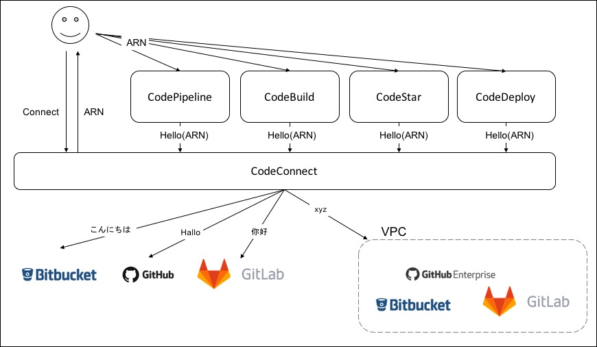
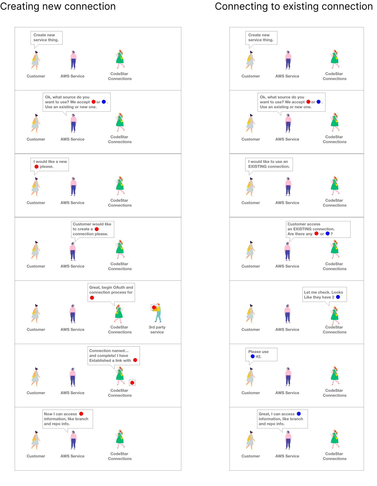
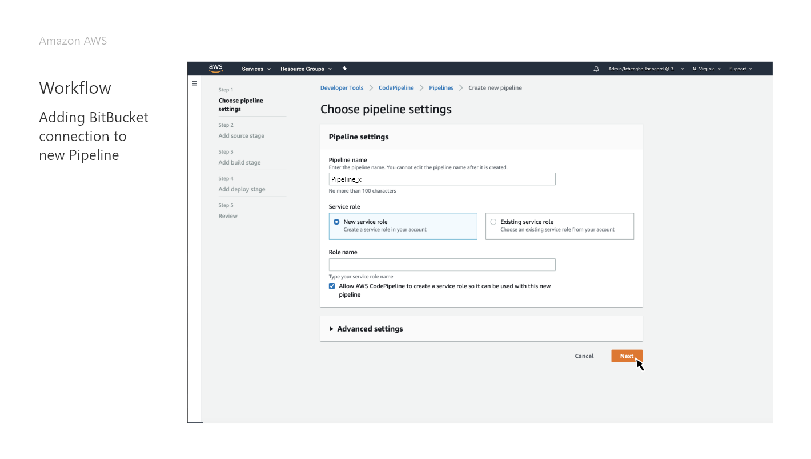
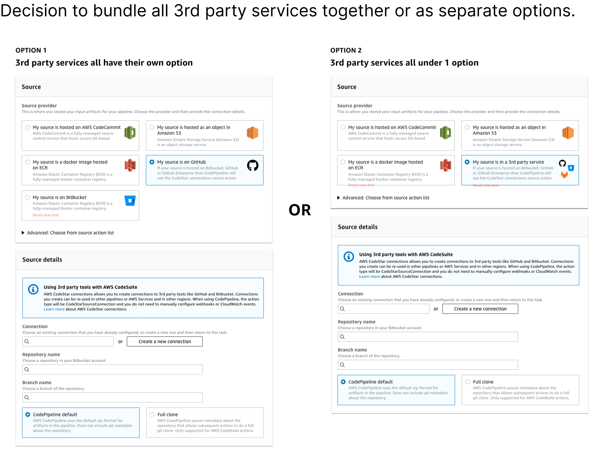

AWS Codestar Connections
2019 - 2021
AWS Connections was a project that I worked on while on the Developer tools design team. This project originated from the CodePipeline team as they had customer need for connecting often with 3rd party developer tools outside of AWS. My role was the primary designer on this team working with the Project manager and many of the engineers. Our goal was to have this project launched within 3 months and intergrated with other AWS teams.
back to the toparrow_upwards
back to portfoliosubdirectory_arrow_left
01. Problem
Sometimes the features in a big platfrom that has been pieced together over time create unqiue problems with redudencies and overlapping features. Different tools across AWS and AWS Developer tools have specific UX flows for users to connect to a 3rd party service.
Here is an example of when creating a new project in AWS CodeStar where you can opt to use Github as an alternative to AWS' CodeCommit repositories. But the problem is that this connection is almost never shared across AWS and causes friction for the users.
02. Research & Analysis
The CodeStar Connections team originated from the smaller team that created the first conceptual prototype: Project Cassowary. The tool was meant to be used only within the bounds of CodePipeline but the project was expanded to cover more AWS developer tools to provide a reusable and easy for teams to integrate way of connecting 3rd party services.
In conversations with AWS customers, GitHub Enterprise, Bitbucket, and GitLab are the most frequently used source control providers used. They tell us they are blocked from using the suite without support for these source providers (compared to, say, github.com.) Based on support ticket count alone, this is the most important request for us to address across the entire code suite. It is also highlighted at least in 2/3 of customer calls and continues to be a key driver of questions from customers about our roadmap.
This project would allow for both simple and straightforward connections with 3rd party services and more advanced enterprise level connections that require VPC configurations.
I made this diagram early in the project, mostly for myself but many others also found it helpful on how we wanted the services to "talk" to each other. I'm generally a very visual learner and like to make visual notes.
03. Design
The overall visual design of the CodeStar Connections is consistent with Amazon's AWS design system: Polaris. Using Polaris components allows for using pre-set components for both design and development. The key aspects that would need to be worked on would be the user experience flow and the copy or written words that give descriptions and feedback to the users.
As a part of the AWS Developer tools design teams, we followed an "User Experience Sign Off" process. The goal is to achieve consistent and clear designs that have been reviewed by peers and stakeholders with the majority of issues and changes addressed before continuing on to the development teams.

I use the review meetings to get feedback on current designs, the show progress that we've made on designs, and get opinions on places that I'm stuck.
In the image above, I presented 2 variations that differ based on how the future of CodeStar Connections might expand. One option was to have each
support 3rd party service in the options, this allowed for higher discoverability but would not be sustainable if we were to increase 5 or more new services.
The alternative is to have a single option for all 3rd party services, but this might obfuscate the options for the user.
In the final rounds of the sign-off meetings, we go over all the details in the design.
1. That the design matches the recommend guidelines of the design system.
2. That there aren't any missed alignments and typos.
3. That all the copy/wording has been read for clarity and grammar.
For this even the help text and tooltips need to be reviewed in the design presentation.
04. Connections in use
One of the first non-CodeStar tools projects in AWS to use CodeStar Connections as a means to seemlessly set up and manage 3rd party
connections was one of the newer machine learning assisted tools: AWS CodeGuru. AWS CodeGuru uses program analysis and machine learning to
review your javascript code to find and offer suggestions.
To do this it will need access to customers' code that can sometimes be located in
3rd party code repositories such as Bitbucket and Github. We worked closely with the CodeGuru team to use AWS CodeConnect's features
to create comprehensive and efficent flows setting up these 3rd party connections.
For the user to get started with AWS CodeGuru, the user is required to do 3 things.
1. Create a connection with their code repository source
2. Set up a "host" (the definition of what a "host" is wasn't made clear, usually in setting up connections the term more common to users is "VPC configuration")
3. Associate one of the repositories from their source with their AWS CodeGuru.
The above screen shows the most complicated option for the customer working with CodeGuru and CodeStar Connections. This was one part of the complex flow we designed for when the user wanted to connect to their Github Enterprise account. We made the decision to nest the steps within the form rather than have separate pages because this was already a step in the larger CodeGuru process.